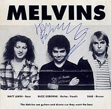

 Banda formada em Montesano(Washington) nos Estados Unidos em 1983, Suas musicas não cabem em nenhuma categoria específica,
tem influencias do grunge, rock experimental, country, metal alternativo, punk rock, rock alternativo e doom metal. Assim que Dale Crover tornou-se o novo baterista,
passaram a tocar músicas mais lentas e
agressivas do que o comum em um contexto punk. O vocalista Buzz Osbome cita "My War" da banda Black Flag como forte influência
no seu estilo de tocar e nas composições da banda, podemos apontar “Gluey Porch Treatments” da banda como o primeiro álbum sludge.
Outro album grande representante do gênero é o "Houdini".

Gluey Porch Treatments
Gluey Porch Treatments é o álbum de estreia da banda de rock americana Melvins, lançado em 1987 pela Alchemy Records. É considerado um dos primeiros exemplos de sludge metal e um modelo para o grunge.
A versão original era apenas em vinil.
O álbum foi posteriormente lançado em fita cassete com oEP Six Songs pela Boner Records e aparece como material bônus na versão em CD de Ozma. As faixas 18–29 só podem
ser encontradas norelançamento da Ipecac Recordings de 1999; essas músicas são tiradas de uma demo do boombox.
"Leeech" era originalmente uma música de Green River intitulada "Leech". Quando o fundador do Melvins, Buzz Osborne, perguntou a um membro do Green River por que eles nunca tocaram a música, a resposta foi que a banda achou que era muito repetitiva e, portanto, foi retirada do set. A música pode ter sido essencialmente dada aos Melvins no local, embora Mark Arm tenha criticado em tom de brincadeira sua alegação de propriedade dela, provocando dizendo que eles atribuíram inadequadamente a música a si mesmos. [7]
A música "Eye Flys" aparece na trilha sonora do filme Kurt Cobain: About a Son and the Melvins álbum ao vivo Sugar Daddy Live. "Glow God", "Big As a Mountain" e "Heaviness of the Load" aparecem no álbum de compilação da Alchemy Records, Peace Thru Chemistry .
A faixa-título Gluey Porch Treatments foi regravada e lançada em 2001 em seu décimo terceiro álbum Electroretard.
Houdini
Houdini é o quinto álbum da banda de sludge metal Melvins, lançado em 1993 pela Atlantic Records. O disco marca a estréia da banda em uma gravadora grande, após ter
lançado todos os álbuns anteriores pelo selo independente Boner Records. O álbum apresenta um cover da música de 1974 do KISS, "Goin' Blind". As faixas "Hooch" e "Honey Bucket" foram
lançadas como singles, junto com seus respectivos vídeo clipes. "Night Goat" é, em parte, a regravação de uma música que a banda havia lançado em 1992 como single. Kurt Cobain é
creditado como sendo o co-produtor, junto com o Melvins, de seis faixas do álbum, sendo responsável também pelas guitarras na música "Sky Pup" e pela percussão em "Spread Eagle
Beagle".
(A) Senile Animal
(A) Senile Animal é o 15º álbum da banda de rock americana Melvins , lançado em 10 de outubro de 2006 pela Ipecac Recordings . Após a saída do baixista Kevin
Rutmanis , os dois membros restantes dos Melvins juntaram forças com o Big Business , uma dupla formada por Jared Warren no baixo e Coady Willis na bateria.
(A) Senile Animal apresenta o som de metal de sludge e stoner da assinatura de Melvins. O crítico da AllMusic, Greg Prato, observou: "Embora eles tenham começado principalmente como uma banda punk que abrandou os riffs,
Melvins também sempre misturara pedaços de rock progressivo, como os ritmos complicados de 'Blood Witch' e 'The Hawk'. O álbum também contém algumas das composições mais diretas
do grupo em algum tempo, incluindo a cantiga new wave 'A History of Drunks.'
- Mais albums:
- Ozma
- Bullhead
- Eggnog
- Stoner Witch
- Stag
- The bootlicker
- Crybaby
- Basses Loaded